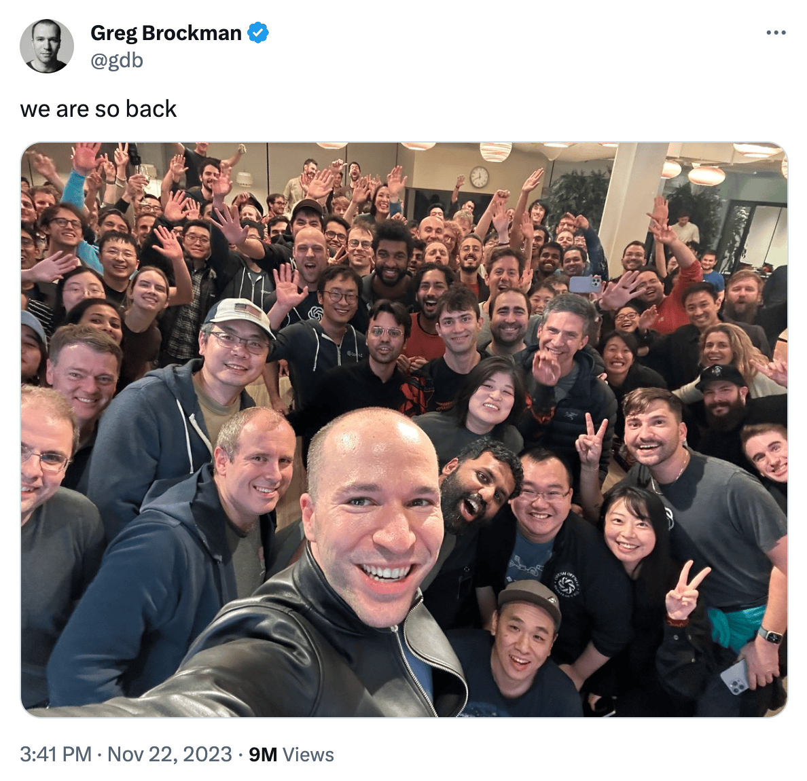

宫斗剧杀青，Sam Altman 又回到了 OpenAI
你好，今天继续聊一下 OpenAI 的宫斗剧后续。

继 Altman 被董事会开除，他与好兄弟 Greg 双双从 OpenAI 离职，同时宣布将加入微软，负责新的高级人工智能项目之后，事情再起涟漪。昨天，也就是 11 月 22 日，Greg 再次宣布，他和 Sam 已经回到了 Open AI。
OpenAI 的官宣是这样的：
我们原则上达成协议，让 Sam Altman 回到 OpenAl 担任首席执行官，由 Bret Taylor（前 salesforce CEO）、Larry Summers（前美国财政部部长）和 Adam D'Angelo（Quora 的联合创始人兼首席执行官，poe.com 创始人）组成了新的初始董事会。Sam Altman 没有在董事会里面，据称是为了让这个协议更快达成，可能也是为了防止将来潜在的利益冲突。
原来的董事会成员 Ilya Sutskever、Adam D’Angelo、Helen Toner、Tasha McCauley，只有 Adam D'Angelo 保留了席位，11 月 17 日发动宫廷政变的 Ilya Sutskever 已经不在董事会名单里。
来自董事会的信
11 月 22 日，即昨天，OpenAI 董事会有人给马斯克转发了一封信，马斯克直接选择将这封信曝光了，据说这封信出自一位 OpenAI 前雇员之手。信的全文译文如下：
致 OpenAI 董事会：
我们作为曾在 OpenAI 工作过的前员工，今天写信是为了表达我们对公司近期事件的深切关切，尤其是针对 Sam Altman 的不当行为指控。
我们是在公司经历重大动荡和变革期间离开的前员工。鉴于您亲眼所见，当有人敢于挑战 Sam Altman 时会发生什么，您可能会理解为何我们许多人出于对报复的担忧而选择沉默。但现在，我们无法再保持沉默。
我们认为董事会有责任对这些指控进行全面调查，并采取适当措施。因此，我们强烈建议您：
- 将 Emmett 的调查范围扩大，包括对 Sam Altman 自 2018 年 8 月起的行为进行审查，这是 OpenAI 从非营利组织向盈利实体转型的开始。
- 对在这一时期内辞职、休医疗假或被解雇的前 OpenAI 员工发起公开征集私人陈述的呼吁。
- 保护那些站出来的人的身份，确保他们不会受到报复或其他形式的伤害。
我们相信，为了促进公司向盈利模式的转变，许多 OpenAI 员工被迫离职。这一点从 2018 年 1 月到 2020 年 7 月期间，公司高达 50% 的员工流失率中可见一斑。
在 OpenAI 工作期间，我们目睹了 Sam Altman 和 Greg Brockman 为了追求人工通用智能（AGI）而展现出的令人不安的欺骗和操纵行为。然而，他们的做法让人严重怀疑他们的真实意图，以及他们是否真正将全人类的利益放在首位。
最初，我们中的许多人对 OpenAI 的使命充满希望，选择相信 Sam 和 Greg。但随着他们的行为越来越引起我们的担忧，那些敢于表达不同意见的人被压制或被迫离开。这种系统性的打压异见创造了一个充满恐惧和压迫的氛围，有效地扼杀了对 OpenAI 工作伦理影响的任何实质性讨论。
关于 Sam 和 Greg 的不诚实和操纵行为，我们可以提供具体例子：
- Sam 要求研究人员推迟报告某些“秘密”研究计划的进展，这些计划最终因未能快速取得成果而被终止。对此提出质疑的人被认为是“文化不合”，甚至被解雇，有些人甚至在 2019 年感恩节前夕遭到解雇。
- Greg 曾对一名性别转变的团队成员使用歧视性语言。尽管曾多次承诺解决这一问题，但除了 Greg 之后避免与受影响人员交流外，未采取任何实质性措施，实际上这种做法造成了一种敌对的工作环境。该团队成员最终以表现不佳为由被解雇。
- Sam 指示 IT 和运营人员在未经管理层知情或同意的情况下，调查包括 Ilya 在内的员工。
- Sam 秘密而常规地利用 OpenAI 的非营利资源来推进他个人的目标，特别是出于与 Elon 决裂后的怨恨。
- 运营团队默认接受适用于 Greg 的特殊规则，巧妙地避开复杂要求以免被列入黑名单。
- Brad Lightcap 未兑现公开详细说明 OpenAI 有限盈利结构和每个投资者的盈利上限的承诺。
- Sam 对研究项目计算配额的不一致承诺，导致内部不信任和内斗。
尽管越来越多的证据揭示了 Sam 和 Greg 的过错，但仍在 OpenAI 的员工依然盲目遵循他们的领导，哪怕这可能给自己带来重大的个人损失。这种坚定的忠诚源于对报复的恐惧以及通过 OpenAI 的利润分享单元可能带来的财务收益的诱惑。
OpenAI 的治理结构，由 Sam 和 Greg 精心设计，故意使员工无法参与监管盈利运营，这主要是因为他们存在固有的利益冲突。这种不透明的结构让 Sam 和 Greg 可以不受惩罚地操作，避免了责任追究。
我们敦促 OpenAI 董事会对这些不道德的行为采取坚定的立场，并启动对 Sam 和 Greg 行为的独立调查。我们坚信 OpenAI 的使命过于重要，不应被少数人的个人目标所影响。
我们恳请董事会坚守 OpenAI 最初的使命，不要屈服于以盈利为主导的利益压力。人工智能的未来和人类的福祉取决于您对道德领导和透明度的坚定承诺。
此致， 关切的前 OpenAI 员工
信的英文原文可以在这里查看：https://web.archive.org/web/20231121225252/https://gist.github.com/Xe/32d7bc436e401f3323ae77e7e242f858
从信的内容来看，貌似董事会之前做出开除 Sam 及 Greg 的决定是正义的，至少是师出有名的。董事会的这名成员将此信转发给马斯克，可能就是希望马斯克曝光它，这件事发生在 Sam 与 Greg 两人确认将回归 OpenAI 的当天。
有人说，这份指控信并不包含实质有力的证据，针对 Greg 关于性别歧视的指控貌似也是为了黑而黑，如果 Sam 是这样一个掌握欲极强的人，他便不会允许那样的一个董事会存在。
从开发者春晚上 Sam 的表现来看，他确实也不像一位具有极强掌控欲的老板。但，关于董事会的反驳可能是不合适的，因为董事会在 OpenAI 成立之初就定下了，Sam 是从 2018 年 8 月才开始掌舵公司的。
这封姗姗来迟的信更像是为 OpenAI 董事会之前的疯狂行为给出一个合理的解释，并不是想阻止 Sam 及 Greg 回归公司。
事件是如何发生反转的
11 月 17 日，在 Sam、Greg 离开 OpenAI 后，很多 OpenAI 员工在分享的社交帖子中写道：“没有它的员工，OpenAI 什么都不是。”
舆论已经开始倾向于 OpenAI 前 CEO。
11 月 20 日，微软宣布 Sam 与 Greg 将加盟微软。当日微软股价上涨 2.05%，创 52 周以来新高，市值增加 462.15 亿美元。微软一个公开声明就赚了 460 多亿美金，老板纳德拉的能力果然不是盖的。
21 日，490 名 OpenAI 员工联名给董事会写了一封信，要求董事会收回裁决，让 Sam 和 Greg 回归公司。有趣的是，之前组织董事会开会开除 Sam 的 Ilya Sutskever，也在这封信上署名了。
为什么 Ilya 也会签字？
据说，11 月 19 日，Greg Brockman 的妻子 Anna 在 OpenAI 办公室敦促 Ilya Sutskever 改变立场，几小时后，Ilya 与其他员工一起签署了联名信。Anna 的私人劝说应该只是促进了 Ilya 签字，但不是根本原因。
许多 OpenAI 员工对 Sam 被解雇一事缺乏沟通感到十分沮丧，他们在联名信中威胁董事会要追随奥特曼加入微软。他们写道：“微软已经向我们保证，如果我们选择加入，这个新团队将为所有 OpenAI 员工敞开大门。”
如果这件事发生，微软心里肯定乐开了花，几乎 800 名 OpenAI 员工将跟随 Sam 加盟微软，这相当于以一个十分低廉的成本招安了 OpenAI 团队。竞争对手 Meta、Anthropic 等公司肯定也喜闻乐见。此时压力完全到了董事会这边，如果这件事真的发生，OpenAI 可能就此陨落，而董事会将因此被指责。
Ilya 甚至在社交平台上发帖表示，为自己参与了董事会罢免 Sam 的行动感到后悔，指自己从未有意想做出有损 OpenAI 公司的事。他想保持 OpenAI 的初心，但绝对不想 OpenAI 从此垮掉甚至消失。
有人说，在 Sam 被董事会辞退前几周，Sam 就因 Helen Toner 的论文与其产生过冲突，外界认为是导致 Sam 被董事会开除的潜在的原因。但探长并不这样认为，事后被抛出来的一切信息，都像是为之前的错误决定而洗罪的。Sam 与 Helen Toner 的论文理念可能真的存在冲突，但这应该还不足以成为决定性原因。
OpenAI 的历史：理念之争
一切问题的起因，可以追溯到公司最初的非营利性质。2015 年，Sam Altman 与 Elon Musk 和包括 Ilya Sutskever 在内的其他人，共同成立了这个非营利机构————OpenAI，目标是构建对人类安全和有益的 AI。最初公司计划从私人捐赠者那里筹集资金，马斯克为此还捐赠了 1 亿美金，但几年后，他们意识到，私人捐赠根本无法满足庞大的计算所需的资金。
2018 年马斯克离开 OpenAI，OpenAI 开始在 Sam 的带领下改革。通过设立允许盈利的子公司，OpenAI 吸纳了包括微软在内的诸多机构的投资，OpenAI 开始快速发展，并于 2022 年 11 月 30 日发布 ChatGPT 一举成名。
据知情人士透露，2011 年，OpenAI 另一位高级 AI 科学家 Dario Amodei 离开公司创立了 Anthropic 公司，后来该公司发布的 Claude 产品被认为是可与 ChatGPT 争锋的 LLM 赛道第二。Dario Amodei 和他的同事曾向董事会提出反对意见，希望推翻 Altman 的要求，但失败了。
在这件事中，据说 Ilya Sutskever 是偏向 Dario Amodei 这一边的。但因为当时 OpenAI 风雨飘摇，确实需要先解决发展问题，所以 Sam 的理念胜出了。
今年 2023 年 11 月 6 日，OpenAI 在成功举办开发者春晚以后，Sam 和 Greg 拉开了进行新一轮融资的帷幕，董事会具有理念之争的双方，他们之间的矛盾才开始突显了。
如果说之前为了发展，OpenAI 允许激进商业化，那么现在，OpenAI 的立足已经不足为虞，是不是应该停下来好好想一想 AI 的安全问题，好好想一想 OpenAI 成立的初心？在董事会中对 Sam 持反对意见的人，他们可能这样想。
回顾
好，最后总结一下。
理念之争的根本问题最终得到解决了吗？没有。我在上一篇文章中，还羡慕米国有如此为人类根本利益而思考的文化担当，不承想，72 个小时后就被打脸了。
这一次 Sam 和 Greg 之所以能够回到 OpenAI，探长个人认为是 OpenAI 员工及其投资者裹挟了舆论的力量，迫使董事会中的反对派妥协了。经此一役，OpenAI 董事会改组了，以后应该不会再有这样的事情发生了，这对 Sam 及 OpenAI 签署联合信的员工或许是对事，但对整个人类而言却未必是好事。
谁来保证 OpenAI 这艘巨轮在以后的航行中继续保持它的初心不变？
我也没有答案，我和你一样都只是一个远隔重洋的吃瓜群众。或许像 Anthropic 这样的竞争对手存在，才是促使 OpenAI 大方向不走偏的保证。无论 OpenAI 今后如何发展，我们都认为它首先是安全的，其次才是高效和高能的。
我想起了Grok（https://grok.x.ai），它是马斯克 2018 年被赶出 OpenAI 董事会以后，自己主导研发的 AI。在它刚刚官宣时我就提交了试用申请，很可惜现在都没有通过。

在 OpenAI 的董事会改组以后，我希望 Grok 和 Claude（https://claude.ai）可以好好发展。AI 公司不应该一家独大，也不能允许一家独大，即使目前它没有表现出任何恶意行为。
该文由 rustpress 编译。

评论